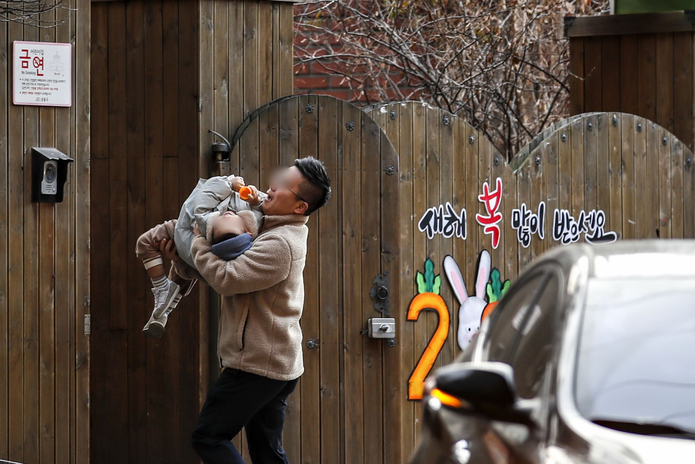
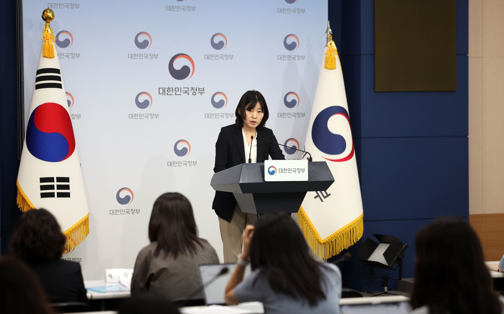
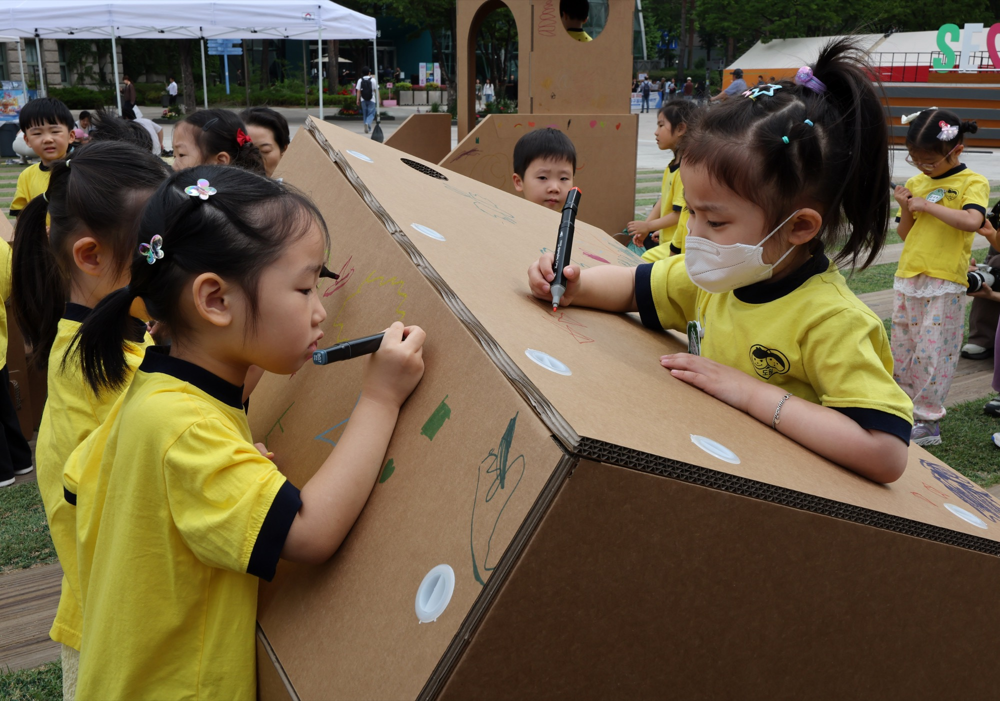

인근 20곳에 문의했다는 부모
육아정책연구소의 2025년 보고서에는 복직을 앞두고 이사한 뒤 인근 어린이집 20곳에 연락했지만 자리를 찾지 못했다는 참여자가 나온다. 다른 동네 어린이집을 이용하다 옮겼고, 이후에도 민간 육아도우미의 도움을 받았다고 했다.
연구보고서 231쪽 · 면담 사례 보기 ↗최근 육아휴직을 마치고 복직한 김모씨는 어린이집 입소 차례가 오지 않아 두 달 동안 부모님에게 아이를 맡겼다. 김씨는 부모님이 가까이 계시지 않았다면 복직이 어려웠을 것이라고 말했다.
김씨의 근무시간은 오전 9시부터 오후 6시까지였다. 다른 도움을 받지 못할 때에는 아이가 어린이집에서 하루 11~12시간을 보냈다고 했다.
김씨의 하루를 따라가면 ↓
01 / 김씨가 겪은 돌봄 공백
김씨는 아이가 태어난 달에 따라 어린이집 일정을 맞추기 어렵다는 경험도 전했다. 입소 대기와 장시간 보육, 다른 서비스를 이용한 이야기를 나눠 살폈다.
두 달
입소 차례가 오지 않은 두 달 동안 조부모가 아이를 돌봤다. 김씨는 부모님이 근처에 계시지 않았다면 복직이 어려웠을 것이라고 말했다.
김씨는 다른 도움을 받지 못할 때 아이가 어린이집에 11~12시간가량 있었다고 설명했다. 아래는 김씨가 말한 시간의 길이를 비교한 것이다.
02 / 다른 부모가 남긴 기록
육아정책연구소의 2025년 보고서에는 복직을 앞두고 이사한 뒤 인근 어린이집 20곳에 연락했지만 자리를 찾지 못했다는 참여자가 나온다. 다른 동네 어린이집을 이용하다 옮겼고, 이후에도 민간 육아도우미의 도움을 받았다고 했다.
연구보고서 231쪽 · 면담 사례 보기 ↗2024년 5월 14일 레딧 ‘workingmoms’의 한 작성자는 복직 후 어린이집 자리를 기다리며 부모님에게 주 4일 아이를 맡기고 있다고 썼다. 8주가 지나자 부모님도 언제까지 돌봐야 하는지 묻지만, 본인도 답하기 어렵다는 사연이었다.
작성자의 국가와 사연은 별도 인터뷰로 확인한 사례가 아니다. 국내 제도의 대기기간이나 발생 빈도를 보여주는 자료로 쓰지 않았다.
2024년 5월 14일 게시글 원문 ↗03 / 찾아오는 돌봄도 기다려야 한다
김씨는 정부 긴급돌봄과 맘시터도 이용했지만 자신에게는 큰 도움이 되지 않았다고 말했다. 이와 별도로, 정부가 발표한 가정방문 아이돌봄서비스 조사에서는 연계 대기기간 만족도가 2.9점으로 전반 만족도 3.9점보다 낮았다.

서비스 전반 만족도
3.9 / 5점연계 대기기간 만족도
2.9 / 5점서비스 이용가구 4,000가구 대상 조사. 2026년 8월 13일 발표. 어린이집 입소 대기나 민간 맘시터 이용에 관한 통계가 아니다.
성평등가족부 발표 원문 ↗정부 브리핑은 이용가구가 가장 필요하다고 꼽은 개선 과제로 대기 해소를 위한 아이돌봄사 확대를 들었다. 브리핑 전문 ↗
04 / 맞벌이인데 왜 기다려야 할까
김씨는 다문화가족에 주어지는 우선순위에도 의문을 제기했다. 중앙육아종합지원센터의 어린이집 안내에는 맞벌이와 다문화가족 모두 1순위 항목으로 들어 있다. 다른 신청자의 가족 구성만 보고 김씨가 왜 기다렸는지 판단할 수는 없다. [4]
유치원 우선모집은 별개다. 뉴시스의 ‘자가와 차 두 대’ 보도도 유치원에 관한 온라인 전언을 다뤘다. 아래에서는 실제 유치원 한 곳의 요강에 조건을 적용해, 무엇이 우선항목인지 확인할 수 있다.
먼저 구분할 것
뉴시스의 ‘자가와 차 두 대’ 보도는 유치원 우선모집에 관한 온라인 전언을 다뤘다. 개별 가구의 재산이나 실제 선발 결과를 확인한 보도는 아니다. [1]
김씨의 어린이집 경험과 별개로, 실제 유치원 한 곳의 모집요강을 두 원서에 적용해봤다.
두 아이 모두 2023년생·한국 국적의 신규 지원자다. 처음에는 다른 우선요건이 없는 것으로 뒀다. B는 한국인과 결혼이민자인 부모를 둔 자녀의 예시다. 우선모집 접수는 2026년 11월 4일 마감됐으며, 당시 요강의 기준을 비교한다.
이 유치원의 우선모집 지원자격을 비교한다. 실제 선발·미선발 결과나 어린이집 대기순번은 아니다. ‘기타 4순위 이하’를 대기 4번이나 합격 보장으로 읽어서는 안 된다.
소득액으로 저소득 자격을 계산하지 않는다. 해당 법정 자격이 있다는 예시를 비교한다. 다른 조건은 한 번에 하나씩만 바꾼다.
원서 A는 다문화가정 항목에 해당하지 않는 가정, B는 한국인과 결혼이민자인 부모·한국 국적 자녀로 이루어져 해당 요강의 다문화가정 항목에 해당하는 가정의 예시다. 부모의 국적만 입력받아 법정 다문화가족 여부를 판정하지 않는다.
최우선·보훈·북한이탈·쌍생아·장애부모·보호시설·한부모·졸업생 동생 등의 다른 자격은 없는 것으로 고정했다. 전체 항목은 아래에서 볼 수 있다. 같은 모집 분류 안의 세부 처리나 개인의 최종 자격은 해당 기관에 확인해야 한다.
인천한빛초 병설유치원의 2027학년도 우선모집 항목이다. 다문화가정은 여러 가족·보호 조건과 함께 ‘기타 4순위 이하’에 들어 있다.
맞벌이 자체는 이 우선모집 표에 없다. 그렇다고 맞벌이 가정 모두가 우선모집에서 제외된다는 뜻은 아니다. 다른 항목에 해당하면 그 기준으로 지원할 수 있다.
재학 유아 · 배치된 특수교육대상자
법정저소득층
국가보훈대상자 가정
북한이탈주민 가정
쌍생아 · 재원 형제자매 · 본교 재학생 형제자매 · 사회적 배려 대상자 · 다자녀 · 다문화가정 · 장애부모 · 한부모 · 졸업생 동생
요강 3·5·6쪽을 정리했다. 재원 형제자매 등에는 입학 이후 함께 다녀야 하는 세부조건이 있다. 적용조건과 증빙은 원문을 확인해야 한다. [2]
요강에 적힌 신규 모집인원은 연령반마다 다르다. 아래 숫자는 2026년 10월 16일 공고 요강에 담긴 계획으로, 현재 빈자리나 경쟁률이 아니다.
우선모집은 선착순이 아닌 시스템 무작위 추첨이며, 선발 또는 미선발로 결과가 나온다. 우선모집 대상이 아니라면 일반모집을 확인해야 한다. 다만 요강은 우선모집에서 해당 연령·과정의 인원이 모두 선발되면 일반모집 선발 인원이 0명이 된다고 안내한다. [2]
일반모집 인원은 우선모집 결과에 따라 달라진다. 이 유치원의 올해 연령반별 선발·등록 결과는 아직 확인하지 않았다.
이 요강의 다문화가정 항목은 국적을 확인할 수 있는 서류로 증빙한다. 주택이나 차량 대수를 확인하는 서류는 해당 항목에 적혀 있지 않다. 한편 법정저소득층은 별도의 1순위 항목이다. 한 항목의 소득조건과 전체 요강을 구분해야 한다. [2]
다문화가족지원법은 귀화자와 출생 때부터 한국 국적인 사람으로 이뤄진 가족도 다문화가족으로 정의한다. 그런데 이 요강은 ‘한국인과 외국인’, ‘귀화 한국인과 외국인’, ‘귀화 한국인과 귀화 한국인’ 세 경우만 적었다. 외국인 부모가 귀화한 뒤에도 지원할 수 있는지는 요강 문언만으로 판단하기 어렵다. 기관 확인이 필요한 부분이다. [2] [3]
어린이집 입소기준에는 맞벌이가 1순위 항목으로 들어간다. 다문화가족도 1순위 항목이다. 이 구분은 유치원 우선모집 순위와 서로 환산할 수 없다. 김씨의 대기 문제를 살피려면 해당 어린이집의 기준부터 확인해야 한다. [4]

김씨에게 돌아오면
김씨는 입소 차례를 기다리는 동안 부모님에게 아이를 맡기고 출근했다. 두 달이었다.
긴급돌봄과 맘시터도 이용했지만 김씨에게는 충분한 대안이 되지 못했다. 복직을 앞두고 아이를 맡길 곳이 없었던 때, 도움을 준 것은 가까이 사는 부모님이었다.
부모님에게 부탁할 수 없는 사람은 어떻게 복직해야 할까. 출근과 등원, 퇴근과 하원 시간은 어떻게 맞춰야 할까.
어린이집 입소 일정에 맞춰 아이를 낳을 수도 없는 일이다.
어디에서 막혔는지, 무엇이 필요했는지. 아이를 키우는 당사자에게 먼저 물어야 한다.
편집샵 그 이후의 이야기
복직 날짜와 어린이집 입소 시기가 맞지 않았나요? 등·하원 시간을 맞추기 위해 일을 조정한 적이 있나요? 그때 아이를 어떻게 돌봤는지 들려주세요.
기자에게 경험과 의견 보내기안재현 기자 · reslow@newsis.com
보내주신 경험과 의견은 ‘편집샵 그 이후의 이야기’를 위한 후속 취재에 참고합니다. 인용이나 추가 취재가 필요한 경우 먼저 연락드리겠습니다.
개별 불편이나 제도 개선 의견은 국민신문고에서 보낼 수 있습니다.
국민신문고에 의견 보내기 ↗청와대가 안내하는 국민제안 살펴보기 ↗국민제안 정책화 시스템은 기존 제안을 살펴보고 토론하는 참여 창구입니다.